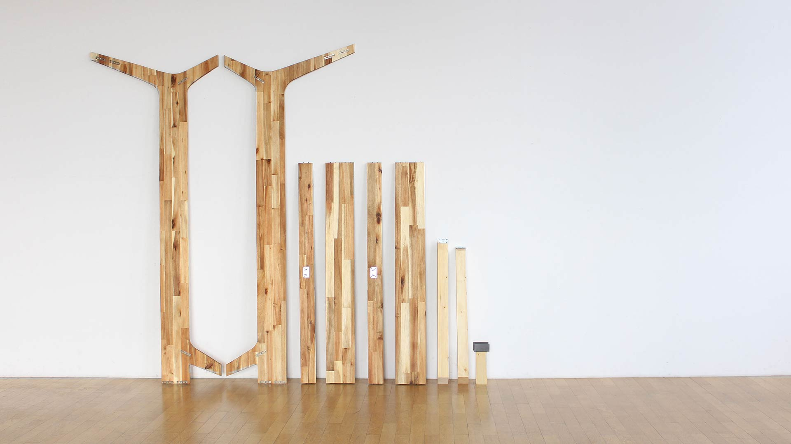
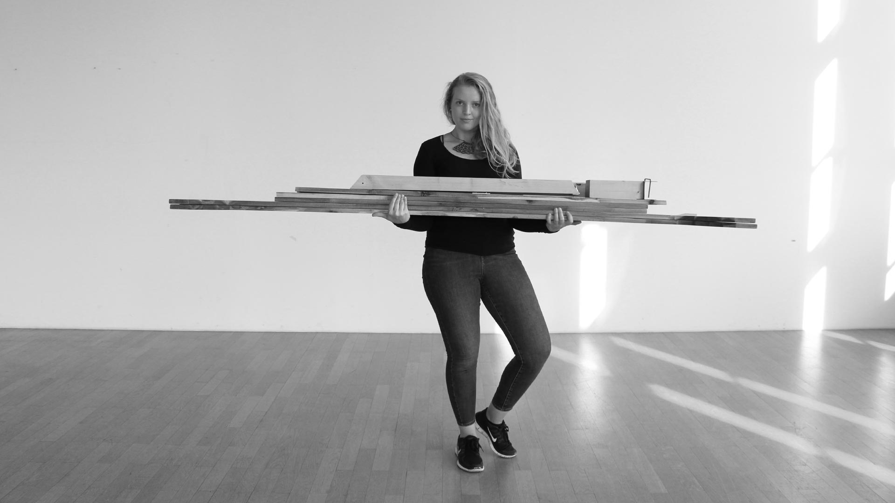
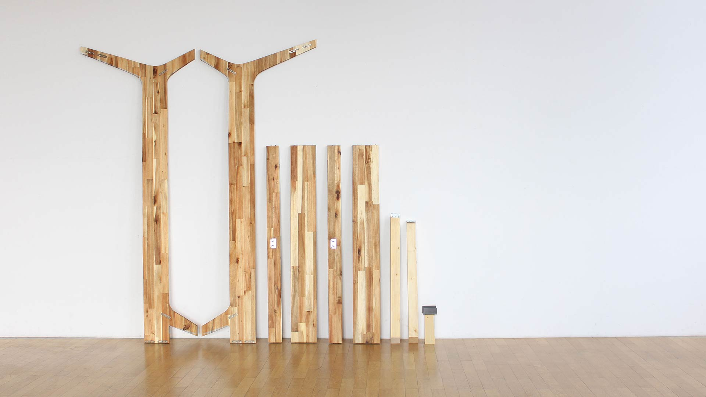
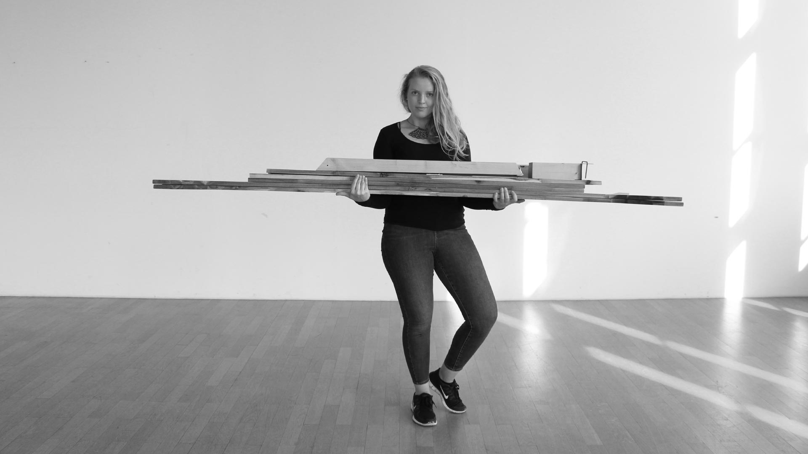

A BED FRAME FOR QUICK SETUPS AND EASY ADJUSTMENTS.
b|r|ett – product design, free project
b|r|ett (german: bett = bed, brett = board) is a bed frame which is easily assembled and
disassembled due to its connection with keyhole brackets – no tools are needed, you just hang the
boards together. Its width can also be shortened by simply cutting the connecting boards to the
desired length. The frame was made from two acacia wood panels (60 cm x 220 cm).
process & learning:
it took me 2 years to find a design I was happy with. From then building the bed frame only took
about a week. I started with sketches, pen on paper and moved on to 3D modeling. Then I printed the
pieces on paper in 1:1, cut them out and transferred them onto the boards. I cut them out with a
jigsaw, milled holes for the keyhole brackets and put everything together. For the first prototype
it works really well, there are a few things I would change for instance, aligning the boards
vertically instead of on an angle to provide better stability or to make the headbord longer to
prevent pillows falling through.
here is a timelapse video of the assembly
(pwd: kaiping).
actual time for setup: 2:15 minutes.
 


